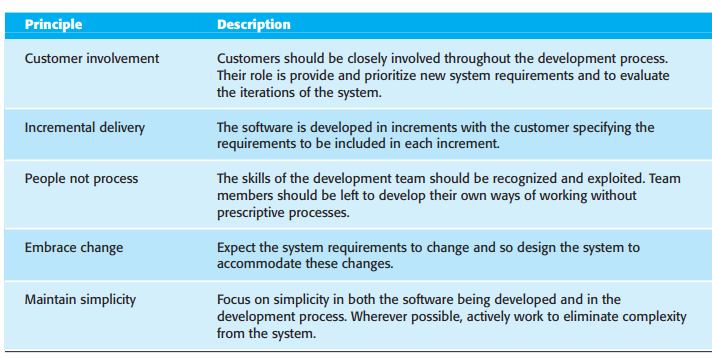
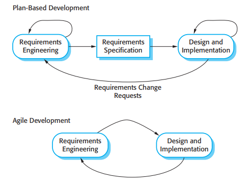
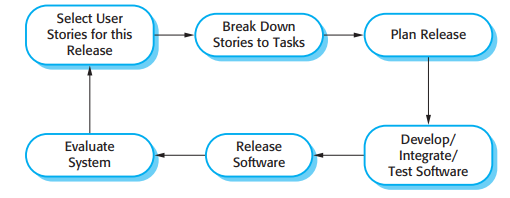
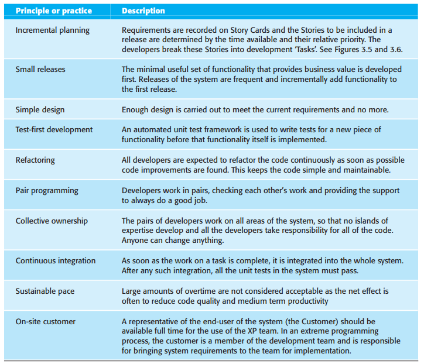
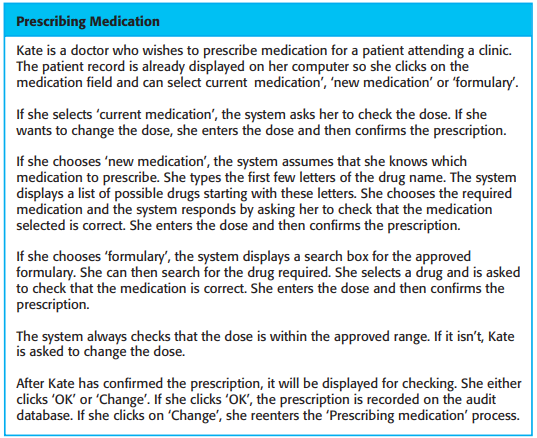
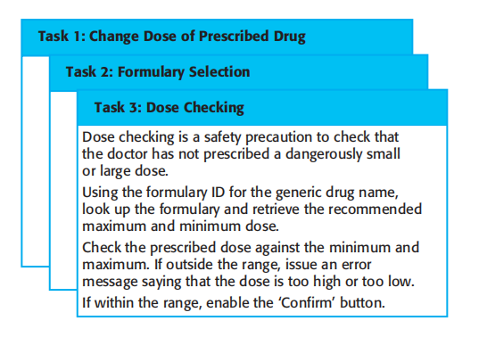
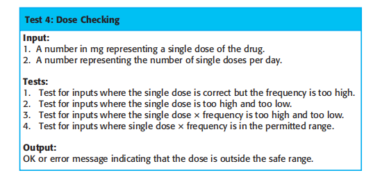
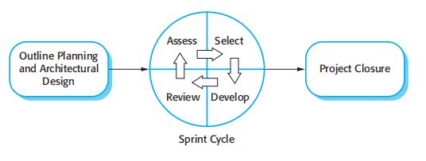

<!DOCTYPE html>
<html lang="en">
<head>
    <meta charset="UTF-8">
    <meta name="viewport" content="width=device-width, initial-scale=1.0">
    <title>Chapter 3</title>
    <link rel="stylesheet" href="../output.css">
</head>
<body class="body"> 

    <nav class="navbar ">
        <div class="container">
            <div class="nav-content">
                <div class="nav-logo">
                    <svg class="logo-icon" fill="none" stroke="currentColor" viewBox="0 0 24 24">
                        <path stroke-linecap="round" stroke-linejoin="round" stroke-width="2" d="M12 6.253v13m0-13C10.832 5.477 9.246 5 7.5 5S4.168 5.477 3 6.253v13C4.168 18.477 5.754 18 7.5 18s3.332.477 4.5 1.253m0-13C13.168 5.477 14.754 5 16.5 5c1.747 0 3.332.477 4.5 1.253v13C19.832 18.477 18.247 18 16.5 18c-1.746 0-3.332.477-4.5 1.253" />
                    </svg>
                    <span class="logo-text">Software Engineering</span>
                </div>
                <div class="nav-links">
                    <a  href="chapterOne.html" class="nav-link">Chapter One</a>
                    <a href="chapterTwo.html" class="nav-link">Chapter Two</a>
                    <a href="chapterThree.html" class="nav-link">Chapter Three</a>
                    <a href="chapterFour.html" class="nav-link">Chapter Four</a>
                </div>
            </div>
        </div>
    </nav>

    
    <main class="main ">


        <header class="header ">
           <section class="">
              <h1>3</h1>   
              <h2>Agile software development</h2>
           </section>
        </header>

        <section class="objective">
            <h3 class=" h1">
                Objectives
            </h3>
            <p>The objective of this chapter is to introduce you to agile software development methods. When you have read the chapter, you will:</p>

            <br>
        
            
                <li>understand the rationale for agile software development methods,the agile manifesto, and the differences between agile and plandriven development;</li>
                <li>know the key practices in extreme programming and how these relate to the general principles of agile methods;</li>
                <li>understand the Scrum approach to agile project management;</li>
                <li>understand the concepts of user stories, story points, and velocity;</li>
                <li>be aware of the issues and problems of scaling agile developmentmethods to the development of large software systems.</li>
            

        </section>  


    
        <section class="content">
            <h4 class="h2">Contents</h4>

            <p>
                3.1 Agile methods <br>
                3.2 Plan-driven and agile development <br>
                3.3 Extreme programming <br>
                3.4 Agile project management <br>
                3.5 Scaling agile methods
            </p>
        </section>


        <section class="page57 ">
                <p>Chapter 3 ■ Agile software development <strong>57</strong></p>
        </section>
        
        <article class="article ">

            <section class="article_section1 ">
               <p>Businesses now operate in a global, rapidly changing environment. They have to respond to new opportunities and markets, changing economic conditions, and the
                 emergence of competing products and services. Software is part of almost all business operations so new software is developed quickly to take advantage of new
                 opportunities and to respond to competitive pressure. Rapid development and delivery is therefore now often the most critical requirement for software systems. In fact,
                 many businesses are willing to trade off software quality and compromise on requirements to achieve faster deployment of the software that they need. 
              </p>

              <br>

                <p>Because these businesses are operating in a changing environment, it is often practically impossible to derive a complete set of stable software requirements. The initial
                   requirements inevitably change because customers find it impossible to predict how a system will affect working practices, how it will interact with other systems, and what
                   user operations should be automated. It may only be after a system has been delivered and users gain experience with it that the real requirements become clear. Even then,
                  the requirements are likely to change quickly and unpredictably due to external factors.The software may then be out of date when it is delivered.
                </p>

                <br>

                
                <p>Software development processes that plan on completely specifying the requirements and then designing, building, and testing the system are not geared to rapid software
                    development. As the requirements change or as requirements problems are discovered, the system design or implementation has to be reworked and retested. As a consequence, a conventional waterfall or 
                    specification-based process is usually prolonged and the final software is delivered to the customer long after it was originally specified.
                </p>

                <br>

                <p>
                   For some types of software, such as safety-critical control systems, where a complete analysis of the system is essential, a plan-driven approach is the right one.
                   However, in a fast-moving business environment, this can cause real problems. By the time the software is available for use, the original reason for its procurement may
                   have changed so radically that the software is effectively useless. Therefore, for business systems in particular, development processes that focus on rapid software
                   development and delivery are essential. 
                </p>
                
                <br>

                <p>
                   The need for rapid system development and processes that can handle changing
                   requirements has been recognized for some time. IBM introduced incremental development in the 1980s (Mills et al., 1980). The introduction of so-called fourthgeneration languages, also in the 1980s, supported the idea of quickly developing
                   and delivering software (Martin, 1981). However, the notion really took off in the late 1990s with the development of the notion of agile approaches such as DSDM
                  (Stapleton, 1997), Scrum (Schwaber and Beedle, 2001), and extreme programming (Beck, 1999; Beck, 2000).</p>

               </p>

               <br>

                <p>
                  Rapid software development processes are designed to produce useful software quickly. The software is not developed as a single unit but as a series of increments, with
                  each increment including new system functionality. Although there are many
                  approaches to rapid software development, they share some fundamental characteristics:
                </p>

                <br>
            
               <p>
                  1. The processes of specification, design, and implementation are interleaved.There is no detailed 
                  system specification, and design documentation is minimized or generated automatically by the programming environment used to
                </p>
            </section>

            <section class="page58 ">
               <p><strong>58</strong> Chapter 3 ■ Agile software development</p>
            </section>

            <section class="article_section2">

                <p>
                    implement the system. The user requirements document only defines the most important characteristics of the system.
                    <br>
                    <br>2. The system is developed in a series of versions. End-users and other system stakeholders are involved in specifying and evaluating each version. They may
                    propose changes to the software and new requirements that should be implemented in a later version of the system.
                    <br>
                    <br>3. System user interfaces are often developed using an interactive development
                    system that allows the interface design to be quickly created by drawing and placing icons on the interface. The system may then generate a web-based interface for
                    a browser or an interface for a specific platform such as Microsoft Windows.
                    Agile methods are incremental development methods in which the increments are
                    small and, typically, new releases of the system are created and made available to customers every two or three weeks. They involve customers in the development process
                    to get rapid feedback on changing requirements. They minimize documentation by
                    using informal communications rather than formal meetings with written documents.
                </p>

                <p>
                    <br>Agile methods are incremental development methods in which the increments are
                     small and, typically, new releases of the system are created and made available to customers every two or three weeks. They involve customers in the development process
                     to get rapid feedback on changing requirements. They minimize documentation using informal communications rather than formal meetings with written documents.
                </p>
            </section>

            <section class="page31">
                <h3>3.1 Agile methods</h3>
            </section>

            <section class=" article_section3 ">
                In the 1980s and early 1990s, there was a widespread view that the best way to achieve better software was through careful project planning, formalized quality
                assurance, the use of analysis and design methods supported by CASE tools, and controlled and rigorous software development processes. This view came from the
                software engineering community that was responsible for developing large, longlived software systems such as aerospace and government systems.
            </p>

            <br>

            <p>
                This software was developed by large teams working for different companies. Teams were often geographically dispersed and worked on the software for long periods of
                time. An example of this type of software is the control systems for a modern aircraft,
                which might take up to 10 years from initial specification to deployment. These plandriven approaches involve a significant overhead in planning, designing, and documenting the system. This overhead is justified when the work of multiple development teams
                has to be coordinated, when the system is a critical system, and when many different
                people will be involved in maintaining the software over its lifetime.
            </p>

            <br>

            <p>
                However, when this heavyweight, plan-driven development approach is applied to small and medium-sized business systems, the overhead involved is so large that it
                dominates the software development process. More time is spent on how the system
should be developed than on program development and testing. As the system
requirements change, rework is essential and, in principle at least, the specification
and design has to change with the program.

            </p>

            <br>

            <p>
                Dissatisfaction with these heavyweight approaches to software engineering led a
number of software developers in the 1990s to propose new ‘agile methods’. These
allowed the development team to focus on the software itself rather than on its design
            </p>

            </section>

            <section  class="page59">
                <p>3.1 ■ Agile methods 59</p>
            </section>

            <section class=" article_section4 ">
                <p>
                    and documentation. Agile methods universally rely on an incremental approach to software specification, development, and delivery. They are best suited to application development where the system requirements usually change rapidly during the development
process. They are intended to deliver working software quickly to customers, who can
then propose new and changed requirements to be included in later iterations of the system. They aim to cut down on process bureaucracy by avoiding work that has dubious
long-term value and eliminating documentation that will probably never be used.
                </p>

                <br>
                 
                <p>
                    The philosophy behind agile methods is reflected in the agile manifesto that was
agreed on by many of the leading developers of these methods. This manifesto states:
                </p>

                <br>
            
                <p>
                    We are uncovering better ways of developing software by doing it and helping
others do it. Through this work we have come to value:
Individuals and interactions over processes and tools
Working software over comprehensive documentation
Customer collaboration over contract negotiation
Responding to change over following a plan
That is, while there is value in the items on the right, we value the items on the
left more
                </p>

                <br>

           
                <p>
                    Probably the best-known agile method is extreme programming (Beck, 1999;
Beck, 2000), which I describe later in this chapter. Other agile approaches include
Scrum (Cohn, 2009; Schwaber, 2004; Schwaber and Beedle, 2001), Crystal
(Cockburn, 2001; Cockburn, 2004), Adaptive Software Development (Highsmith,
2000), DSDM (Stapleton, 1997; Stapleton, 2003), and Feature Driven Development
(Palmer and Felsing, 2002). The success of these methods has led to some integration
with more traditional development methods based on system modelling, resulting in
the notion of agile modelling (Ambler and Jeffries, 2002) and agile instantiations of
the Rational Unified Process (Larman, 2002).
                </p>

                <br>


                <p>
                    Although these agile methods are all based around the notion of incremental development and delivery, they propose different processes to achieve this. However, they
share a set of principles, based on the agile manifesto, and so have much in common.
These principles are shown in Figure 3.1. Different agile methods instantiate these principles in different ways and I don’t have space to discuss all agile methods. Instead, I
focus on two of the most widely used methods: extreme programming (Section 3.3) and
Scrum (Section 3.4).
                </p>

                <br>

                 <p>
                    Agile methods have been very successful for some types of system development:
                 </p> 

                 <br>

            
                <p>
                   1. Product development where a software company is developing a small or
medium-sized product for sale.
                </p>

                <p>
                    2. Custom system development within an organization, where there is a clear commitment from the customer to become involved in the development process and
where there are not a lot of external rules and regulations that affect the software.
                </p>
            
            </section>

            

            <section  class="images1   ">
                
            </section>

            

            <section class="article_section5 ">
                <p>
                    As I discuss in the final section of this chapter, the success of agile methods has
meant that there is a lot of interest in using these methods for other types of software
development. However, because of their focus on small, tightly integrated teams,
there are problems in scaling them to large systems. There have also been experiments in using agile approaches for critical systems engineering (Drobna et al.,
2004). However, because of the need for security, safety, and dependability analysis
in critical systems, agile methods require significant modification before they can be
routinely used for critical systems engineering.
                </p>

                <br>

                <p>
                    In practice, the principles underlying agile methods are sometimes difficult to realize:
                </p>
                <br>
           
                <p>
                    1. Although the idea of customer involvement in the development process is an
attractive one, its success depends on having a customer who is willing and able
to spend time with the development team and who can represent all system
stakeholders. Frequently, the customer representatives are subject to other pressures and cannot take full part in the software development.
                </p>

                <p>
                    2. Individual team members may not have suitable personalities for the intense
involvement that is typical of agile methods, and therefore not interact well with
other team members.
                </p>

                <p>
                    3. Prioritizing changes can be extremely difficult, especially in systems for which
there are many stakeholders. Typically, each stakeholder gives different priorities to different changes.
                </p>

                <p>
                    4. Maintaining simplicity requires extra work. Under pressure from delivery
schedules, the team members may not have time to carry out desirable system
simplifications.
                </p>
            </section>

            <section class="page61">
                <p>3.1 ■ Agile methods 61</p>
            </section>

            <section class="article_section6 ">
                <p>
                    5. Many organizations, especially large companies, have spent years changing
their culture so that processes are defined and followed. It is difficult for them to
move to a working model in which processes are informal and defined by development teams.
                </p>
                <br>
           
                <p>
                    Another non-technical problem—that is a general problem with incremental
development and delivery—occurs when the system customer uses an outside organization for system development. The software requirements document is usually part
of the contract between the customer and the supplier. Because incremental specification is inherent in agile methods, writing contracts for this type of development
may be difficult.
                </p>
                <br>

                <p>
                    Consequently, agile methods have to rely on contracts in which the customer pays
for the time required for system development rather than the development of a specific set of requirements. So long as all goes well, this benefits both the customer and
the developer. However, if problems arise then there may be difficult disputes over
who is to blame and who should pay for the extra time and resources required to
resolve the problems.
                </p>
                <br>

                <p>
                    Most books and papers that describe agile methods and experiences with agile
methods talk about the use of these methods for new systems development.
However, as I explain in Chapter 9, a huge amount of software engineering effort
goes into the maintenance and evolution of existing software systems. There are only
a small number of experience reports on using agile methods for software maintenance (Poole and Huisman, 2001). There are two questions that should be considered when considering agile methods and maintenance:
                </p>
                <br>

                <p>
                    1. Are systems that are developed using an agile approach maintainable, given the
emphasis in the development process of minimizing formal documentation?

                </p>

                <p>
                    2. Can agile methods be used effectively for evolving a system in response to customer change requests?
                </p>
                <br>

            
                <p>
                    Formal documentation is supposed to describe the system and so make it easier
for people changing the system to understand. In practice, however, formal documentation is often not kept up to date and so does not accurately reflect the program
code. For this reason, agile methods enthusiasts argue that it is a waste of time to
write this documentation and that the key to implementing maintainable software is
to produce high-quality, readable code. Agile practices therefore emphasize the
importance of writing well-structured code and investing effort in code improvement. Therefore, the lack of documentation should not be a problem in maintaining
systems developed using an agile approach.

                </p>
                <br>

                <p>
                    However, my experience of system maintenance suggests that the key document
is the system requirements document, which tells the software engineer what the
system is supposed to do. Without such knowledge, it is difficult to assess the impact
of proposed system changes. Many agile methods collect requirements informally
and incrementally and do not create a coherent requirements document. In this
                </p>
            </section>

            <section class="page62">
                <p>
                    62 Chapter 3 ■ Agile software development
                </p>
            </section>

            <section class="article_section7 ">
                <p>
                    respect, the use of agile methods is likely to make subsequent system maintenance
more difficult and expensive.
                </p>
                <br>

                <p>
                    Agile practices, used in the maintenance process itself, are likely to be effective,
whether or not an agile approach has been used for system development. Incremental
delivery, design for change and maintaining simplicity all make sense when software
is being changed. In fact, you can think of an agile development process as a process
of software evolution.
                </p>
                <br>

                <p>
                    of software evolution.
However, the main difficulty after software delivery is likely to be keeping customers involved in the process. Although a customer may be able to justify the fulltime involvement of a representative during system development, this is less likely
during maintenance where changes are not continuous. Customer representatives are
likely to lose interest in the system. Therefore, it is likely that alternative mechanisms, such as change proposals, discussed in Chapter 25, will be required to create
the new system requirements.
                </p>
                <br>

                <p>
                    The other problem that is likely to arise is maintaining continuity of the development team. Agile methods rely on team members understanding aspects of the
system without having to consult documentation. If an agile development team is
broken up, then this implicit knowledge is lost and it is difficult for new team members to build up the same understanding of the system and its components.
                </p>
                <br>

                <p>
                    Supporters of agile methods have been evangelical in promoting their use and
have tended to overlook their shortcomings. This has prompted an equally extreme
response, which, in my view, exaggerates the problems with this approach (Stephens
and Rosenberg, 2003). More reasoned critics such as DeMarco and Boehm
(DeMarco and Boehm, 2002) highlight both the advantages and disadvantages of
agile methods. They propose a hybrid approach where agile methods incorporate
some techniques from plan-driven development may be the best way forward.
                </p>
            </section>

            <section class="page32">
                <h3>3.2 Plan-driven and agile development</h3>
            </section>

            <section class=" article_section8 ">
                <p>
                    Agile approaches to software development consider design and implementation to be
the central activities in the software process. They incorporate other activities, such as
requirements elicitation and testing, into design and implementation. By contrast, a
plan-driven approach to software engineering identifies separate stages in the software process with outputs associated with each stage. The outputs from one stage are
used as a basis for planning the following process activity. Figure 3.2 shows the distinctions between plan-driven and agile approaches to system specification.
                </p>
                <br>

                <p>
                    In a plan-driven approach, iteration occurs within activities with formal documents used to communicate between stages of the process. For example, the requirements will evolve and, ultimately, a requirements specification will be produced.
This is then an input to the design and implementation process. In an agile approach,
iteration occurs across activities. Therefore, the requirements and the design are
developed together, rather than separately.
                </p>
            </section>

            <br>

            <section class="page63">
                <p>3.2 ■ Plan-driven and agile development 63</p>
            </section>

            <section class="images2">
                
            </section>

            <section class="article_section9 ">
                <p>
                    A plan-driven software process can support incremental development and delivery. It is perfectly feasible to allocate requirements and plan the design and development phase as a series of increments. An agile process is not inevitably code-focused
and it may produce some design documentation. As I discuss in the following section, the agile development team may decide to include a documentation ‘spike’,
where, instead of producing a new version of a system, the team produce system
documentation.
                </p>
                <br>

                <p>In fact, most software projects include practices from plan-driven and agile
approaches. To decide on the balance between a plan-based and an agile approach,
you have to answer a range of technical, human, and organizational questions:
                </p>
                <br>
                <p>
                    1. Is it important to have a very detailed specification and design before moving to
implementation? If so, you probably need to use a plan-driven approach.

                </p>
                 <br>
                <p>
                    2. Is an incremental delivery strategy, where you deliver the software to customers
and get rapid feedback from them, realistic? If so, consider using agile methods.
                </p>
                <br>

                <p>
                    3. How large is the system that is being developed? Agile methods are most effective when the system can be developed with a small co-located team who can
communicate informally. This may not be possible for large systems that require
larger development teams so a plan-driven approach may have to be used.
                </p>
                <br>
                <p>
                    4. What type of system is being developed? Systems that require a lot of analysis
before implementation (e.g., real-time system with complex timing requirements) usually need a fairly detailed design to carry out this analysis. A plandriven approach may be best in those circumstances.
                </p>
                <br>

                <p>
                   5. What is the expected system lifetime? Long-lifetime systems may require more
design documentation to communicate the original intentions of the system 
                </p>
            </section>

            <section class="page64">
                <p>
                    64 Chapter 3 ■ Agile software development
                </p>
            </section>

            <section  class="article_section10 ">
                <p>
                    developers to the support team. However, supporters of agile methods rightly
argue that documentation is frequently not kept up to date and it is not of much
use for long-term system maintenance.
                </p>
                <br>

                <p>
                    6. What technologies are available to support system development? Agile methods
often rely on good tools to keep track of an evolving design. If you are developing a system using an IDE that does not have good tools for program visualization and analysis, then more design documentation may be required.
                </p>
                <br>

                <p>
                    7. How is the development team organized? If the development team is distributed
or if part of the development is being outsourced, then you may need to develop
design documents to communicate across the development teams. You may
need to plan in advance what these are.
                </p>
                <br>

                <p>
                    8. Are there cultural issues that may affect the system development? Traditional
engineering organizations have a culture of plan-based development, as this is
the norm in engineering. This usually requires extensive design documentation,
rather than the informal knowledge used in agile processes.
                </p>
                <br>

                <p>
                    9. How good are the designers and programmers in the development team? It is
sometimes argued that agile methods require higher skill levels than plan-based
approaches in which programmers simply translate a detailed design into code.
If you have a team with relatively low skill levels, you may need to use the best
people to develop the design, with others responsible for programming
                </p>
                <br>

                <p>
                    10. Is the system subject to external regulation? If a system has to be approved by an
external regulator (e.g., the Federal Aviation Authority [FAA] approve software
that is critical to the operation of an aircraft) then you will probably be required
to produce detailed documentation as part of the system safety case.

                </p>
                <br>
            
                <p>
                    In reality, the issue of whether a project can be labelled as plan-driven or agile is
not very important. Ultimately, the primary concern of buyers of a software system
is whether or not they have an executable software system that meets their needs and
does useful things for the individual user or the organization. In practice, many companies who claim to have used agile methods have adopted some agile practices and
have integrated these with their plan-driven processes.
                </p>
            </section>

            <section class="page33">
                <h3>3.3 Extreme programming</h3>
            </section>

            <section  class="article_section11 ">
                <p>
                    Extreme programming (XP) is perhaps the best known and most widely used of the
agile methods. The name was coined by Beck (2000) because the approach was
developed by pushing recognized good practice, such as iterative development, to
‘extreme’ levels. For example, in XP, several new versions of a system may be developed by different programmers, integrated and tested in a day.
                </p>
            </section>

            <Section class="page65">
                <P>
                    3.3 ■ Extreme programming 65
                </P>
            </Section>

            <Section class="images3">
               
            </Section>

            <section  class="article_section12 ">
                <p>
                    In extreme programming, requirements are expressed as scenarios (called user
stories), which are implemented directly as a series of tasks. Programmers work in
pairs and develop tests for each task before writing the code. All tests must be successfully executed when new code is integrated into the system. There is a short time
gap between releases of the system. Figure 3.3 illustrates the XP process to produce
an increment of the system that is being developed.
                </p>
                <br>

                <p>
                    Extreme programming involves a number of practices, summarized in Figure 3.4,
which reflect the principles of agile methods:
                </p>
                <br>
            
                <p>
                    1. Incremental development is supported through small, frequent releases of the
system. Requirements are based on simple customer stories or scenarios that are
used as a basis for deciding what functionality should be included in a system
increment.
                </p>
                <br>

                <p>
                    2. Customer involvement is supported through the continuous engagement of the
customer in the development team. The customer representative takes part in the
development and is responsible for defining acceptance tests for the system.
                </p>
                <br>

                <p>
                    3. People, not process, are supported through pair programming, collective ownership of the system code, and a sustainable development process that does not
involve excessively long working hours.
                </p>
                <br>

                <p>
                    4. Change is embraced through regular system releases to customers, test-first
development, refactoring to avoid code degeneration, and continuous integration of new functionality.

                </p>
                <br>

                <p>
                    5. Maintaining simplicity is supported by constant refactoring that improves code
quality and by using simple designs that do not unnecessarily anticipate future
changes to the system.

                </p>
                <br>
            

                <p>
                    In an XP process, customers are intimately involved in specifying and prioritizing
system requirements. The requirements are not specified as lists of required system
functions. Rather, the system customer is part of the development team and discusses
scenarios with other team members. Together, they develop a ‘story card’ that encapsulates the customer needs. The development team then aims to implement that scenario in a future release of the software. An example of a story card for the mental
                </p>
            </section>

            <section class="page66">
                <p>
                    66 Chapter 3 ■ Agile software development
                </p>
            </section>


            <section class="images4">
                
            </section>

            <section  class="article_section13 ">
                <p>
                    health care patient management system is shown in Figure 3.5. This is a short
description of a scenario for prescribing medication for a patient.
                </p>

                <p>
                    The story cards are the main inputs to the XP planning process or the ‘planning
game’. Once the story cards have been developed, the development team breaks these
down into tasks (Figure 3.6) and estimates the effort and resources required for implementing each task. This usually involves discussions with the customer to refine the
requirements. The customer then prioritizes the stories for implementation, choosing
those stories that can be used immediately to deliver useful business support. The
intention is to identify useful functionality that can be implemented in about two
weeks, when the next release of the system is made available to the customer.
                </p>

                <p>
                    Of course, as requirements change, the unimplemented stories change or may be
discarded. If changes are required for a system that has already been delivered, new
story cards are developed and again, the customer decides whether these changes
should have priority over new functionality
                </p>
            </section>

            <section class="images5">
                
            </section>

            <section  class="article_section14 ">
                <p>
                    Sometimes, during the planning game, questions that cannot be easily answered
come to light and additional work is required to explore possible solutions. The team
may carry out some prototyping or trial development to understand the problem and
solution. In XP terms, this is a ‘spike’, an increment where no programming is done.
There may also be ‘spikes’ to design the system architecture or to develop system
documentation.
                </p>

                <p>
                    Extreme programming takes an ‘extreme’ approach to incremental development.
New versions of the software may be built several times per day and releases are
delivered to customers roughly every two weeks. Release deadlines are never
slipped; if there are development problems, the customer is consulted and functionality is removed from the planned release
                </p>

                <p>
                    When a programmer builds the system to create a new version, he or she must run
all existing automated tests as well as the tests for the new functionality. The new
build of the software is accepted only if all tests execute successfully. This then
becomes the basis for the next iteration of the system.
                </p>

                <p>A fundamental precept of traditional software engineering is that you should
design for change. That is, you should anticipate future changes to the software and
design it so that these changes can be easily implemented. Extreme programming,
however, has discarded this principle on the basis that designing for change is often
wasted effort. It isn’t worth taking time to add generality to a program to cope with
change. The changes anticipated often never materialize and completely different
change requests may actually be made. Therefore, the XP approach accepts that
changes will happen and reorganize the software when these changes actually occur.
                    
                </p>
            </section>

            <section class="page68">
                <p>
                    68 Chapter 3 ■ Agile software development
                </p>
            </section>

            <section class="images6">
               
            </section>

            <section  class="article_section15 ">
                <p>
                    A general problem with incremental development is that it tends to degrade the
software structure, so changes to the software become harder and harder to implement. Essentially, the development proceeds by finding workarounds to problems,
with the result that code is often duplicated, parts of the software are reused in inappropriate ways, and the overall structure degrades as code is added to the system.
                </p>
                <br>

                <p>
                    Extreme programming tackles this problem by suggesting that the software
should be constantly refactored. This means that the programming team look for
possible improvements to the software and implement them immediately. When a
team member sees code that can be improved, they make these improvements even
in situations where there is no immediate need for them. Examples of refactoring
include the reorganization of a class hierarchy to remove duplicate code, the tidying up and renaming of attributes and methods, and the replacement of code with
calls to methods defined in a program library. Program development environments,
such as Eclipse (Carlson, 2005), include tools for refactoring which simplify the
process of finding dependencies between code sections and making global code
modifications.
                </p>
                <br>

                <p>
                    In principle then, the software should always be easy to understand and change as
new stories are implemented. In practice, this is not always the case. Sometimes
development pressure means that refactoring is delayed because the time is devoted
to the implementation of new functionality. Some new features and changes cannot
readily be accommodated by code-level refactoring and require the architecture of
the system to be modified.
                </p>
                <br>

                <p>
                    In practice, many companies that have adopted XP do not use all of the extreme
programming practices listed in Figure 3.4. They pick and choose according to their
local ways of working. For example, some companies find pair programming helpful; others prefer to use individual programming and reviews. To accommodate different levels of skill, some programmers don’t do refactoring in parts of the system
they did not develop, and conventional requirements may be used rather than user
stories. However, most companies who have adopted an XP variant use small
releases, test-first development, and continuous integration.
                </p>
            </section>

            <section class="page69">
                <p>
                    3.3 ■ Extreme programming 69
                </p>
            </section>

            <section class="page33-1 ">
                <h3>
                    3.3.1 Testing in XP
                </h3>
            </section>

            <section  class="article_section16 ">
                <p>
                    As I discussed in the introduction to this chapter, one of the important differences
between incremental development and plan-driven development is in the way that
the system is tested. With incremental development, there is no system specification
that can be used by an external testing team to develop system tests. As a consequence, some approaches to incremental development have a very informal testing
process, in comparison with plan-driven testing.
To avoid some of the problems of testing and system validation, XP emphasizes
the importance of program testing. XP includes an approach to testing that reduces
the chances of introducing undiscovered errors into the current version of the system.
The key features of testing in XP are:
                </p>
                <br>

                <p>
                    
                        <li>
                             Test-first development,
                        </li>

                        <li>
                            incremental test development from scenarios,
                        </li>

                        <li>
                            user involvement in the test development and validation, and
                        </li>

                        <li>
                            the use of automated testing frameworks
                        </li>
                    

                </p>
                <br>

                <p>
                    Test-first development is one of the most important innovations in XP. Instead of
writing some code and then writing tests for that code, you write the tests before you
write the code. This means that you can run the test as the code is being written and
discover problems during development.
                </p>
                <br>

                <p>
                    Writing tests implicitly defines both an interface and a specification of behavior
for the functionality being developed. Problems of requirements and interface misunderstandings are reduced. This approach can be adopted in any process in which there
is a clear relationship between a system requirement and the code implementing that
requirement. In XP, you can always see this link because the story cards representing
the requirements are broken down into tasks and the tasks are the principal unit of
implementation. The adoption of test-first development in XP has led to more general
test-driven approaches to development (Astels, 2003). I discuss these in Chapter 8.
                </p>
                <br>

                <p>
                    In test-first development, the task implementers have to thoroughly understand
the specification so that they can write tests for the system. This means that ambiguities and omissions in the specification have to be clarified before implementation
begins. Furthermore, it also avoids the problem of ‘test-lag’. This may happen when
the developer of the system works at a faster pace than the tester. The implementation gets further and further ahead of the testing and there is a tendency to skip tests,
so that the development schedule can be maintained.
                </p>
                <br>

                <p>
                    User requirements in XP are expressed as scenarios or stories and the user prioritizes these for development. The development team assesses each scenario and
breaks it down into tasks. For example, some of the task cards developed from the
story card for prescribing medication (Figure 3.5) are shown in Figure 3.6. Each task
generates one or more unit tests that check the implementation described in that task.
Figure 3.7 is a shortened description of a test case that has been developed to check
that the prescribed dose of a drug does not fall outside known safe limits.
                </p>
            </section>

            <section class="page70">
                <p>
                    70 Chapter 3 ■ Agile software development
                </p>
            </section>

            <section class="images7">
                
            </section>

            <section  class="article_section17 ">
                <p>
                    The role of the customer in the testing process is to help develop acceptance tests
for the stories that are to be implemented in the next release of the system. As I discuss in Chapter 8, acceptance testing is the process where the system is tested using
customer data to check that it meets the customer’s real needs.
                </p>
                <br>
            

            
                <p>
                    In XP, acceptance testing, like development, is incremental. The customer who is
part of the team writes tests as development proceeds. All new code is therefore validated to ensure that it is what the customer needs. For the story in Figure 3.5, the
acceptance test would involve scenarios where (a) the dose of a drug was changed,
(b) a new drug was selected, and (c) the formulary was used to find a drug. In practice, a series of acceptance tests rather than a single test are normally required.
                </p>
                <br>

                <p>
                    Relying on the customer to support acceptance test development is sometimes a
major difficulty in the XP testing process. People adopting the customer role have
very limited available time and may not be able to work full-time with the development team. The customer may feel that providing the requirements was enough of a
contribution and so may be reluctant to get involved in the testing process.
                </p>
                <br>

                <p>
                    Test automation is essential for test-first development. Tests are written as executable
components before the task is implemented. These testing components should be stand alone, should simulate the submission of input to be tested, and should check that the
result meets the output specification. An automated test framework is a system that
makes it easy to write executable tests and submit a set of tests for execution. Junit
(Massol and Husted, 2003) is a widely used example of an automated testing framework.
                </p>
                <br>

                <p>
                    As testing is automated, there is always a set of tests that can be quickly and easily executed. Whenever any functionality is added to the system, the tests can be run
and problems that the new code has introduced can be caught immediately.
                </p>
                <br>

                <p>
                    Test-first development and automated testing usually results in a large number of
tests being written and executed. However, this approach does not necessarily lead to
thorough program testing. There are three reasons for this:
                </p>
                <br>
            

            
                <p>
                    1. Programmers prefer programming to testing and sometimes they take shortcuts
when writing tests. For example, they may write incomplete tests that do not
check for all possible exceptions that may occur.
                </p>
            </section>

            <section class="page71">
                <p>
                    3.3 ■ Extreme programming 71
                </p>
            </section>

            <section  class="article_section18 ">
                <p>
                    2. Some tests can be very difficult to write incrementally. For example, in a complex user interface, it is often difficult to write unit tests for the code that implements the ‘display logic’ and workflow between screens.
                </p>
                <br>

                <p>
                    3. It difficult to judge the completeness of a set of tests. Although you may have a
lot of system tests, your test set may not provide complete coverage. Crucial
parts of the system may not be executed and so remain untested.
                </p>
                <br>

                <p>
                    Therefore, although a large set of frequently executed tests may give the impression that the system is complete and correct, this may not be the case. If the tests are
not reviewed and further tests written after development, then undetected bugs may
be delivered in the system release.
                </p>
            </section>

            <section class="page33-2 ">
                <h3>
                    3.3.2 Pair programming
                </h3>
            </section>


            <section  class="article_section19 ">
                <p>
                    Another innovative practice that has been introduced in XP is that programmers
work in pairs to develop the software. They actually sit together at the same workstation to develop the software. However, the same pairs do not always program
together. Rather, pairs are created dynamically so that all team members work with
each other during the development process.
The use of pair programming has a number of advantages:
                </p>
                <br>

                <p>
                    1. It supports the idea of collective ownership and responsibility for the system.
This reflects Weinberg’s (1971) idea of egoless programming where the software is owned by the team as a whole and individuals are not held responsible
for problems with the code. Instead, the team has collective responsibility for
resolving these problems.
                </p>
                <br>

                <p>
                    2. It acts as an informal review process because each line of code is looked at by at
least two people. Code inspections and reviews (covered in Chapter 24) are very
successful in discovering a high percentage of software errors. However, they
are time consuming to organize and, typically, introduce delays into the development process. Although pair programming is a less formal process that probably doesn’t find as many errors as code inspections, it is a much cheaper
inspection process than formal program inspections.
                </p>
                <br>

                <p>
                    3. It helps support refactoring, which is a process of software improvement. The difficulty of implementing this in a normal development environment is that effort in
refactoring is expended for long-term benefit. An individual who practices refactoring may be judged to be less efficient than one who simply carries on developing
code. Where pair programming and collective ownership are used, others benefit
immediately from the refactoring so they are likely to support the process.
                </p>
                <br>

                <p>
                    You might think that pair programming would be less efficient than individual programming. In a given time, a pair of developers would produce half as much code as
                </p>
            </section>

            <section class="page72">
                <p>
                    72 Chapter 3 ■ Agile software development
                </p>
            </section>

            <section  class="article_section20 ">
                <p>
                    two individuals working alone. There have been various studies of the productivity of
paid programmers with mixed results. Using student volunteers, Williams and her
collaborators (Cockburn and Williams, 2001; Williams et al., 2000) found that productivity with pair programming seems to be comparable with that of two people
working independently. The reasons suggested are that pairs discuss the software
before development so probably have fewer false starts and less rework. Furthermore,
the number of errors avoided by the informal inspection is such that less time is spent
repairing bugs discovered during the testing process.
                </p>
                <br>

                <p>
                    However, studies with more experienced programmers (Arisholm et al., 2007;
Parrish et al., 2004) did not replicate these results. They found that there was a significant loss of productivity compared with two programmers working alone. There were
some quality benefits but these did not fully compensate for the pair-programming
overhead. Nevertheless, the sharing of knowledge that happens during pair programming is very important as it reduces the overall risks to a project when team members
leave. In itself, this may make pair programming worthwhile.
                </p>
            </section>

            <section class="page34">
                <h3>
                    3.4 Agile project management
                </h3>
            </section>

            <section  class="article_section21 ">
                <p>
                    The principal responsibility of software project managers is to manage the project so
that the software is delivered on time and within the planned budget for the project.
They supervise the work of software engineers and monitor how well the software
development is progressing.
                </p>
                <br>

                <p>
                    The standard approach to project management is plan-driven. As I discuss in
Chapter 23, managers draw up a plan for the project showing what should be delivered, when it should be delivered, and who will work on the development of the project deliverables. A plan-based approach really requires a manager to have a stable
view of everything that has to be developed and the development processes.
However, it does not work well with agile methods where the requirements are
developed incrementally; where the software is delivered in short, rapid increments;
and where changes to the requirements and the software are the norm.
                </p>
                <br>

                <p>
                    Like every other professional software development process, agile development
has to be managed so that the best use is made of the time and resources available to
the team. This requires a different approach to project management, which is
adapted to incremental development and the particular strengths of agile methods.
                </p>
                <br>

                <p>
                    The Scrum approach (Schwaber, 2004; Schwaber and Beedle, 2001) is a general
agile method but its focus is on managing iterative development rather than specific
technical approaches to agile software engineering. Figure 3.8 is a diagram of the Scrum
management process. Scrum does not prescribe the use of programming practices such
as pair programming and test-first development. It can therefore be used with more technical agile approaches, such as XP, to provide a management framework for the project.
                </p>
                <br>

                <p>
                    There are three phases in Scrum. The first is an outline planning phase where you
establish the general objectives for the project and design the software architecture.
                </p>
            </section>

            <section class="page73">
                <p>
                    3.4 ■ Agile project management 73
                </p>
            </section>

            <section  class="article_section22 ">
                <p>
                    The principal responsibility of software project managers is to manage the project so
that the software is delivered on time and within the planned budget for the project.
They supervise the work of software engineers and monitor how well the software
development is progressing.
                </p>
                <br>

                <p>
                    The standard approach to project management is plan-driven. As I discuss in
Chapter 23, managers draw up a plan for the project showing what should be delivered, when it should be delivered, and who will work on the development of the project deliverables. A plan-based approach really requires a manager to have a stable
view of everything that has to be developed and the development processes.
However, it does not work well with agile methods where the requirements are
developed incrementally; where the software is delivered in short, rapid increments;
and where changes to the requirements and the software are the norm.
                </p>
                <br>

                <p>
                    Like every other professional software development process, agile development
has to be managed so that the best use is made of the time and resources available to
the team. This requires a different approach to project management, which is adapted to incremental development and the particular strengths of agile methods.
                </p>
                <br>

                <p>
                    The Scrum approach (Schwaber, 2004; Schwaber and Beedle, 2001) is a general
agile method but its focus is on managing iterative development rather than specific
technical approaches to agile software engineering. Figure 3.8 is a diagram of the Scrum
management process. Scrum does not prescribe the use of programming practices such
as pair programming and test-first development. It can therefore be used with more technical agile approaches, such as XP, to provide a management framework for the project.
                </p>
                <br>

                <p>
                    There are three phases in Scrum. The first is an outline planning phase where you
establish the general objectives for the project and design the software architecture.
                </p>
            </section>

            <section class="page73">
                <p>
                    3.4 ■ Agile project management 73
                </p>
            </section>

            <section class="images8">
                
            </section>

            <section  class="article_section23 ">
                <p>
                    This is followed by a series of sprint cycles, where each cycle develops an increment
of the system. Finally, the project closure phase wraps up the project, completes
required documentation such as system help frames and user manuals, and assesses
the lessons learned from the project.
                </p>
                <br>

                <p>
                    The innovative feature of Scrum is its central phase, namely the sprint cycles.
A Scrum sprint is a planning unit in which the work to be done is assessed, features
are selected for development, and the software is implemented. At the end of a
sprint, the completed functionality is delivered to stakeholders. Key characteristics
of this process are as follows:
                </p>
                <br>

                <p>
                    1. Sprints are fixed length, normally 2–4 weeks. They correspond to the development of a release of the system in XP
                </p>
                <br>

                <p>
                    2. The starting point for planning is the product backlog, which is the list of work
to be done on the project. During the assessment phase of the sprint, this is
reviewed, and priorities and risks are assigned. The customer is closely involved
in this process and can introduce new requirements or tasks at the beginning of
each sprint.
                </p>
                <br>

                <p>
                    3. The selection phase involves all of the project team who work with the customer
to select the features and functionality to be developed during the sprint.
                </p>
                <br>

                <p>
                    4. Once these are agreed, the team organizes themselves to develop the software.
Short daily meetings involving all team members are held to review progress
and if necessary, reprioritize work. During this stage the team is isolated from
the customer and the organization, with all communications channelled through
the so-called ‘Scrum master’. The role of the Scrum master is to protect the
development team from external distractions. The way in which the work is
done depends on the problem and the team. Unlike XP, Scrum does not make
specific suggestions on how to write requirements, test-first development, etc.
However, these XP practices can be used if the team thinks they are appropriate
                </p>
                <br>

                <p>
                    5. At the end of the sprint, the work done is reviewed and presented to stakeholders.
The next sprint cycle then begins.
                </p>
                <br>

                <p>
                    The idea behind Scrum is that the whole team should be empowered to make
decisions so the term ‘project manager’, has been deliberately avoided. Rather, the
                </p>
            </section>

            <section class="page74">
                <p>
                    74 Chapter 3 ■ Agile software development
                </p>
            </section>

            <section  class="article_section24 ">
                <p>
                    ‘Scrum master’ is a facilitator who arranges daily meetings, tracks the backlog of
work to be done, records decisions, measures progress against the backlog, and communicates with customers and management outside of the team.
                </p>
                <br>

                <p>
                    The whole team attends the daily meetings, which are sometimes ‘stand-up’
meetings to keep them short and focused. During the meeting, all team members
share information, describe their progress since the last meeting, problems that have
arisen, and what is planned for the following day. This means that everyone on the
team knows what is going on and, if problems arise, can replan short-term work to
cope with them. Everyone participates in this short-term planning—there is no topdown direction from the Scrum master.
                </p>
                <br>

                <p>
                    There are many anecdotal reports of the successful use of Scrum available on the
Web. Rising and Janoff (2000) discuss its successful use in a telecommunication
software development environment, and they list its advantages as follows:
                </p>
                <br>

                <p>
                    1. The product is broken down into a set of manageable and understandable
chunks.
                </p>
                <br>

                <p>
                    2. Unstable requirements do not hold up progress.
                </p>
                <br>

                <p>
                    3. The whole team has visibility of everything and consequently team communication is improved.
                </p>
                <br>

                <p>
                    4. Customers see on-time delivery of increments and gain feedback on how the
product works.
                </p>
                <br>

                <p>
                    5. Trust between customers and developers is established and a positive culture is
created in which everyone expects the project to succeed.
                </p>
                <br>

                <p>
                    Scrum, as originally designed, was intended for use with co-located teams where
all team members could get together every day in stand-up meetings. However,
much software development now involves distributed teams with team members
located in different places around the world. Consequently, there are various experiments going on to develop Scrum for distributed development environments (Smits
and Pshigoda, 2007; Sutherland et al., 2007).
                </p>
            </section>

            <section class="page35">
                <h3>3.5 Scaling agile methods</h3>
            </section>

            <section  class="article_section25 ">
                <p>
                    Agile methods were developed for use by small programming teams who could
work together in the same room and communicate informally. Agile methods have
therefore been mostly used for the development of small and medium-sized systems.
Of course, the need for faster delivery of software, which is more suited to customer
needs, also applies to larger systems. Consequently, there has been a great deal of
interest in scaling agile methods to cope with larger systems, developed by large
organizations
                </p>
            </section>

            <section class="page75">
                <p>
                    3.5 ■ Scaling agile methods 75
                </p>
            </section>

            <section  class="article_section26 ">
                <p>
                    Denning et al. (2008) argue that the only way to avoid common software engineering problems, such as systems that don’t meet customer needs and budget overruns, is
to find ways of making agile methods work for large systems. Leffingwell (2007) discusses which agile practices scale to large systems development. Moore and Spens
(2008) report on their experience of using an agile approach to develop a large medical system with 300 developers working in geographically distributed teams.
Large software system development is different from small system development
in a number of ways:
                </p>
                <br>

                <p>
                    1. Large systems are usually collections of separate, communicating systems,
where separate teams develop each system. Frequently, these teams are working
in different places, sometimes in different time zones. It is practically impossible for each team to have a view of the whole system. Consequently, their priorities are usually to complete their part of the system without regard for wider
systems issues.
                </p>
                <br>

                <p>
                    2. Large systems are ‘brownfield systems’ (Hopkins and Jenkins, 2008); that is
they include and interact with a number of existing systems. Many of the system
requirements are concerned with this interaction and so don’t really lend themselves to flexibility and incremental development. Political issues can also be
significant here—often the easiest solution to a problem is to change an existing
system. However, this requires negotiation with the managers of that system to
convince them that the changes can be implemented without risk to the system’s
operation.
                </p>
                <br>

                <p>
                    3. Where several systems are integrated to create a system, a significant fraction of
the development is concerned with system configuration rather than original
code development. This is not necessarily compatible with incremental development and frequent system integration.
                </p>
                <br>

                <p>
                    4. Large systems and their development processes are often constrained by external rules and regulations limiting the way that they can be developed, that
require certain types of system documentation to be produced, etc.
                </p>
                <br>

                <p>
                    5. Large systems have a long procurement and development time. It is difficult to
maintain coherent teams who know about the system over that period as,
inevitably, people move on to other jobs and projects.
                </p>
                <br>

                <p>
                    6. Large systems usually have a diverse set of stakeholders. For example, nurses and
administrators may be the end-users of a medical system but senior medical staff,
hospital managers, etc. are also stakeholders in the system. It is practically impossible to involve all of these different stakeholders in the development process.
                </p>
                <br>

                <p>
                    There are two perspectives on the scaling of agile methods:
                </p>
                <br>

                <p>
                    1. A ‘scaling up’ perspective, which is concerned with using these methods for
developing large software systems that cannot be developed by a small team.
                </p>
            </section>

            <section class="page76">
                <p>
                    76 Chapter 3 ■ Agile software development
                </p>
            </section>

            <section  class="article_section27 ">
                <p>
                    2. A ‘scaling out’ perspective, which is concerned with how agile methods can be
introduced across a large organization with many years of software development
experience.
                </p>
                <br>

                <p>
                    Agile methods have to be adapted to cope with large systems engineering.
Leffingwell (2007) argues that it is essential to maintain the fundamentals of agile
methods—flexible planning, frequent system releases, continuous integration, testdriven development, and good team communications. I believe that the critical adaptations that have to be introduced are as follows:
                </p>
                <br>

                <p>
                    1. For large systems development, it is not possible to focus only on the code of the
system. You need to do more up-front design and system documentation. The
software architecture has to be designed and there has to be documentation produced to describe critical aspects of the system, such as database schemas, the
work breakdown across teams, etc.
                </p>
                <br>

                <p>
                    2. Cross-team communication mechanisms have to be designed and used. This
should involve regular phone and video conferences between team members and
frequent, short electronic meetings where teams update each other on progress.
A range of communication channels such as e-mail, instant messaging, wikis,
and social networking systems should be provided to facilitate communications.
                </p>
                <br>

                <p>
                    3. Continuous integration, where the whole system is built every time any developer checks in a change, is practically impossible when several separate programs have to be integrated to create the system. However, it is essential to
maintain frequent system builds and regular releases of the system. This may
mean that new configuration management tools that support multi-team software development have to be introduced
                </p>
                <br>

                <p>
                    Small software companies that develop software products have been amongst the
most enthusiastic adopters of agile methods. These companies are not constrained by
organizational bureaucracies or process standards and they can change quickly to
adopt new ideas. Of course, larger companies have also experimented with agile
methods in specific projects, but it is much more difficult for them to ‘scale out’
these methods across the organization. Lindvall, et al. (2004) discuss some of the
problems in scaling-out agile methods in four large technology companies.<br>
   It is difficult to introduce agile methods into large companies for a number of
reasons:
                </p>
                <br>

                <p>
                    1. Project managers who do not have experience of agile methods may be reluctant
to accept the risk of a new approach, as they do not know how this will affect
their particular projects.
                </p>
                <br>

                <p>
                    2. Large organizations often have quality procedures and standards that all projects
are expected to follow and, because of their bureaucratic nature, these are likely to
be incompatible with agile methods. Sometimes, these are supported by software
                </p>
            </section>

            <section class="page77">
                <p>
                    Chapter 3 ■ Key points 77
                </p>
            </section>

            <section  class="article_section28 ">
                <p>
                    tools (e.g., requirements management tools) and the use of these tools is mandated
for all projects.
                </p>
                <br>

                <p>
                    3. Agile methods seem to work best when team members have a relatively high
skill level. However, within large organizations, there are likely to be a wide
range of skills and abilities, and people with lower skill levels may not be effective team members in agile processes.
                </p>
                <br>

                <p>
                    4. There may be cultural resistance to agile methods, especially in those organizations
that have a long history of using conventional systems engineering processes.
                </p>
                <br>

                <p>
                    Change management and testing procedures are examples of company procedures that may not be compatible with agile methods. Change management is the
process of controlling changes to a system, so that the impact of changes is predictable and costs are controlled. All changes have to be approved in advance before
they are made and this conflicts with the notion of refactoring. In XP, any developer
can improve any code without getting external approval. For large systems, there are
also testing standards where a system build is handed over to an external testing
team. This may conflict with the test-first and test-often approaches used in XP. <br>
Introducing and sustaining the use of agile methods across a large organization is
a process of cultural change. Cultural change takes a long time to implement and
often requires a change of management before it can be accomplished. Companies
wishing to use agile methods need evangelists to promote change. They must devote
significant resources to the change process. At the time of writing, few large companies have made a successful transition to agile development across the organization
                </p>   
            </section>

            
            <section class="keypoints">

                <h2 class="h3">Key points</h2>
               
               <p>
                ■ Agile methods are incremental development methods that focus on rapid development, frequent
releases of the software, reducing process overheads, and producing high-quality code. They
involve the customer directly in the development process.
               </p>
               <br>

               <p>
                 ■ The decision on whether to use an agile or a plan-driven approach to development should
depend on the type of software being developed, the capabilities of the development team, and
the culture of the company developing the system.
               </p>
               <br>

               <p>
                ■ Extreme programming is a well-known agile method that integrates a range of good
programming practices such as frequent releases of the software, continuous software
improvement, and customer participation in the development team.
               </p>
               <br>

               <p>
                ■ A particular strength of extreme programming is the development of automated tests before a
program feature is created. All tests must successfully execute when an increment is integrated
into a system.
               </p>
 
            </section>

            <section class="page78">
                <p>
                    78 Chapter 3 ■ Agile software development
                </p>
            </section>


            <section class="article_section29">
                <p>
                    ■ The Scrum method is an agile method that provides a project management framework. It is
centered around a set of sprints, which are fixed time periods when a system increment is
developed. Planning is based on prioritizing a backlog of work and selecting the highestpriority tasks for a sprint.
                </p>
                <br>

                <p>
                    ■ Scaling agile methods for large systems is difficult. Large systems need up-front design and
some documentation. Continuous integration is practically impossible when there are several
separate development teams working on a project.
                </p>
            </section>

            <section class="article_section30">
                <h3>
                    F U R T H E R  R E A D I N G 
                </h3>
            </section>


            <section class="article_section31">

                <p>
                    Extreme Programming Explained. This was the first book on XP and is still, perhaps, the most
readable. It explains the approach from the perspective of one of its inventors and his
enthusiasm comes through very clearly in the book. (Kent Beck, Addison-Wesley, 2000.)
                </p>
                <br>

                <p>
                    ‘Get Ready for Agile Methods, With Care’. A thoughtful critique of agile methods that discusses
their strengths and weaknesses, written by a vastly experienced software engineer. (B. Boehm,
IEEE Computer, January 2002.) http://doi.ieeecomputersociety.org/10.1109/2.976920.
                </p>
                <br>

                <p>
                    Scaling Software Agility: Best Practices for Large Enterprises. Although focused on issues of
scaling agile development, this book also includes a summary of the principal agile methods
such as XP, Scrum, and Crystal. (D. Leffingwell, Addison-Wesley, 2007.)
                </p>
                <br>

                <p>
                    Running an Agile Software Development Project. Most books on agile methods focus on a
specific method but this book takes a different approach and discusses how to put XP into
practice in a project. Good, practical advice. (M. Holcombe, John Wiley and Sons, 2008.)
                </p>
            </section>


            <section class="exercises_section">

                <h3>
                    E X E R C I S E S
                </h3>

            </section>


            <section class="article_section32">   
                 
                <p>
                    3.1. Explain why the rapid delivery and deployment of new systems is often more important
to businesses than the detailed functionality of these systems.
                </p>
                <br>

                <p>
                    3.2. Explain how the principles underlying agile methods lead to the accelerated development
and deployment of software.
                </p>
                <br>

                <p>
                    3.3. When would you recommend against the use of an agile method for developing a software
system?
                </p>
                <br>

                <p>
                    3.4. Extreme programming expresses user requirements as stories, with each story written
on a card. Discuss the advantages and disadvantages of this approach to requirements
description.
                </p>


            </section>

            <section class="page79">
                <p>
                    Chapter 3 ■ Exercises 79
                </p>
            </section>

            <section class="article_section33">
                <p>
                    3.5. Explain why test-first development helps the programmer to develop a better understanding
of the system requirements. What are the potential difficulties with test-first development?
                </p>
                <br>

                <p>
                    3.6. Suggest four reasons why the productivity rate of programmers working as a pair might be
more than half that of two programmers working individually.
                </p>
                <br>

                <p>
                    3.7. Compare and contrast the Scrum approach to project management with conventional
plan-based approaches, as discussed in Chapter 23. The comparisons should be based
on the effectiveness of each approach for planning the allocation of people to projects,
estimating the cost of projects, maintaining team cohesion, and managing changes in
project team membership.
                </p>
                <br>

                <p>
                    3.8. You are a software manager in a company that develops critical control software
for aircraft. You are responsible for the development of a software design support
system that supports the translation of software requirements to a formal software
specification (discussed in Chapter 13). Comment on the advantages and disadvantages
of the following development strategies:
                </p>
                <br>

                <p>
                    a. Collect the requirements for such a system from software engineers and external
stakeholders (such as the regulatory certification authority) and develop the system
using a plan-driven approach.
                </p>
                <br>

                <p>
                    b. Develop a prototype using a scripting language, such as Ruby or Python, evaluate
this prototype with software engineers and other stakeholders, then review the
system requirements. Redevelop the final system using Java.
                </p>
                <br>

                <p>
                    c. Develop the system in Java using an agile approach with a user involved in the
development team.
                </p>
                <br>

                <p>
                    3.9. It has been suggested that one of the problems of having a user closely involved with
a software development team is that they ‘go native’; that is, they adopt the outlook of
the development team and lose sight of the needs of their user colleagues. Suggest three
ways how you might avoid this problem and discuss the advantages and disadvantages
of each approach.
                </p>
                <br>

                <p>
                    3.10. To reduce costs and the environmental impact of commuting, your company decides to
close a number of offices and to provide support for staff to work from home. However,
the senior management who introduce the policy are unaware that software is developed
using agile methods, which rely on close team working and pair programming. Discuss
the difficulties that this new policy might cause and how you might get around these
problems.
                </p>

            </section>

            <section class=" page80">
               <p>
                80 Chapter 3 ■ Agile software development
               </p>
            </section>

        </article>
    </main>


        <section class="references">
            <h3>
                R E F E R E N C E S
            </h3>
        </section>


        <section class=" last_section">
            <p>
                Ambler, S. W. and Jeffries, R. (2002). Agile Modeling: Effective Practices for Extreme Programming
and the Unified Process. New York: John Wiley & Sons. 
            </p>

            <p>
                Arisholm, E., Gallis, H., Dyba, T. and Sjoberg, D. I. K. (2007). ‘Evaluating Pair Programming with
Respect to System Complexity and Programmer Expertise’. IEEE Trans. on Software Eng., 33 (2),
65–86.
            </p>
        
            <p>
                Astels, D. (2003). Test Driven Development: A Practical Guide. Upper Saddle River, NJ: 
Prentice Hall.
            </p>

            <p>
                Beck, K. (1999). ‘Embracing Change with Extreme Programming’. IEEE Computer, 32 (10), 70–8.
            </p>

            <p>
                Beck, K. (2000). extreme Programming explained. Reading, Mass.: Addison-Wesley.
            </p>

            <p>
                Carlson, D. (2005). Eclipse Distilled. Boston: Addison-Wesley.
            </p>

            <p>
                Cockburn, A. (2004). Crystal Clear: A Human-Powered Methodology for Small Teams. Boston:
                Addison-Wesley.
            </p>

            <p>
                Cockburn, A. and Williams, L. (2001). ‘The costs and benefits of pair programming’. In Extreme
programming examined. (ed.). Boston: Addison-Wesley. 
            </p>

            <p>
                Cohn, M. (2009). Succeeding with Agile: Software Development Using Scrum. Boston: 
Addison-Wesley.
            </p>

            <p>
                Demarco, T. and Boehm, B. (2002). ‘The Agile Methods Fray’. IEEE Computer, 35 (6), 90–2.
            </p>
            <p>
                Denning, P. J., Gunderson, C. and Hayes-Roth, R. (2008). ‘Evolutionary System Development’. Comm.
ACM, 51 (12), 29–31.
            </p>

            <p>
                Drobna, J., Noftz, D. and Raghu, R. (2004). ‘Piloting XP on Four Mission-Critical Projects’. IEEE
Software, 21 (6), 70–5.

            </p>

            <p>
                Highsmith, J. A. (2000). Adaptive Software Development: A Collaborative Approach to Managing
Complex Systems. New York: Dorset House.


            </p>

            <p>
                Hopkins, R. and Jenkins, K. (2008). Eating the IT Elephant: Moving from Greenfield Development to
Brownfield. Boston, Mass.: IBM Press.
            </p>

            <p>
                Larman, C. (2002). Applying UML and Patterns: An Introduction to Object-oriented Analysis and
            </p>

            <p>
                Larman, C. (2002). Applying UML and Patterns: An Introduction to Object-oriented Analysis and
Design and the Unified Process. Englewood Cliff, NJ: Prentice Hall.
            </p>

            <p>
                Leffingwell, D. (2007). Scaling Software Agility: Best Practices for Large Enterprises. Boston:
Addison-Wesley.
            </p>

            <p>
                Lindvall, M., Muthig, D., Dagnino, A., Wallin, C., Stupperich, M., Kiefer, D., May, J. and Kahkonen, T.
            </p>

            <p>
                (2004). ‘Agile Software Development in Large Organizations’. IEEE Computer, 37 (12), 26–34.
            </p>

            <P>
                Martin, J. (1981). Application Development Without Programmers. Englewood Cliffs, NJ:
Prentice-Hall.  
            </P>

            <p>
                Massol, V. and Husted, T. (2003). JUnit in Action. Greenwich, Conn.: Manning Publications Co.  
            </p>

            <p>
                Mills, H. D., O’Neill, D., Linger, R. C., Dyer, M. and Quinnan, R. E. (1980). ‘The Management of
Software Engineering’. IBM Systems. J., 19 (4), 414–77.
            </p>

            <p>
                Moore, E. and Spens, J. (2008). ‘Scaling Agile: Finding your Agile Tribe’. Proc. Agile 2008
Conference, Toronto: IEEE Computer Society. 121–124.
            </p>

            <p>
                Palmer, S. R. and Felsing, J. M. (2002). A Practical Guide to Feature-Driven Development.
Englewood Cliffs, NJ: Prentice Hall.
            </p>

            <p>
                Parrish, A., Smith, R., Hale, D. and Hale, J. (2004). ‘A Field Study of Developer Pairs: Productivity
Impacts and Implications’. IEEE Software, 21 (5), 76–9.
            </p>

            <p>
                Poole, C. and Huisman, J. W. (2001). ‘Using Extreme Programming in a Maintenance Environment’.
IEEE Software, 18 (6), 42–50.
            </p>

            <p>
                Rising, L. and Janoff, N. S. (2000). ‘The Scrum Software Development Process for Small Teams’.
IEEE Software, 17 (4), 26–32.
            </p>

            <p>
                Schwaber, K. (2004). Agile Project Management with Scrum. Seattle: Microsoft Press.
            </p>

            <p>
                Schwaber, K. and Beedle, M. (2001). Agile Software Development with Scrum. Englewood Cliffs,
NJ: Prentice Hall.
            </p>

            <p>
                Smits, H. and Pshigoda, G. (2007). ‘Implementing Scrum in a Distributed Software Development
Organization’. Agile 2007, Washington, DC: IEEE Computer Society. 
            </p>

            <p>
                Stapleton, J. (1997). DSDM Dynamic Systems Development Method. Harlow, UK: Addison-Wesley
            </p>

            <p>
                Stapleton, J. (2003). DSDM: Business Focused Development, 2nd ed. Harlow, UK: Pearson
Education.
            </p>

            <p>
                Stephens, M. and Rosenberg, D. (2003). Extreme Programming Refactored. Berkley, Calif.: Apress.
            </p>

            <p>
                Sutherland, J., Viktorov, A., Blount, J. and Puntikov, N. (2007). ‘Distributed Scrum: Agile Project
Management with Outsourced Development Teams’. 40th Hawaii Int. Conf. on System Sciences,
Hawaii: IEEE Computer Society.
            </p>

            <p>
                Weinberg, G. (1971). The Psychology of Computer Programming. New York: Van Nostrand.
            </p>

            <p>
                Williams, L., Kessler, R. R., Cunningham, W. and Jeffries, R. (2000). ‘Strengthening the Case for Pair
Programming’. IEEE Software, 17 (4), 19–25.
            </p>

        </section>
        
         </article>
    </main>

    <!-- Footer -->
    <footer class="footer">
        <div class="container">
            <div class="footer-content">
                <div class="footer-logo">
                    <svg class="logo-icon" fill="none" stroke="currentColor" viewBox="0 0 24 24">
                        <path stroke-linecap="round" stroke-linejoin="round" stroke-width="2" d="M12 6.253v13m0-13C10.832 5.477 9.246 5 7.5 5S4.168 5.477 3 6.253v13C4.168 18.477 5.754 18 7.5 18s3.332.477 4.5 1.253m0-13C13.168 5.477 14.754 5 16.5 5c1.747 0 3.332.477 4.5 1.253v13C19.832 18.477 18.247 18 16.5 18c-1.746 0-3.332.477-4.5 1.253" />
                    </svg>
                    <span class="logo-text">ReadMore</span>
                </div>
                <ul class="footer-nav">
                    <li><a href="chapterOne.html" class="footer-link">Chapter 1</a></li>
                    <li><a href="#chapterTwo.html" class="footer-link">Chapter 2</a></li>
                    <li><a href="#chapterThree.html" class="footer-link">Chapter 3</a></li>
                    <li><a href="#chapterFour.html" class="footer-link">Chapter 4</a></li>
                </ul>
            </div>
            <div class="footer-bottom">
                <p class="footer-copyright">© 2025 ReadMore. All rights reserved.</p>
            </div>
        </div>
    </footer>

</body>
</html>